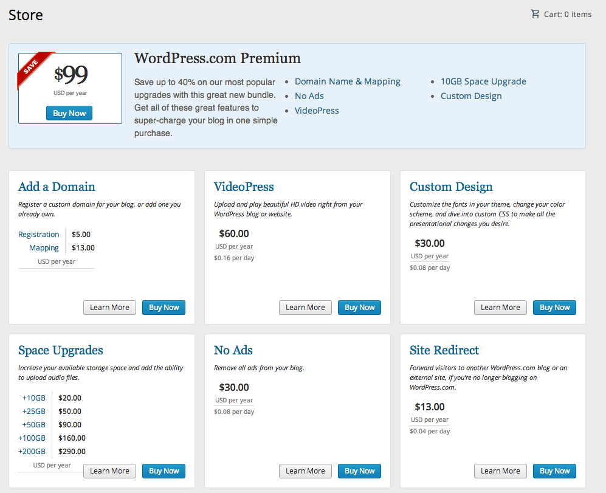
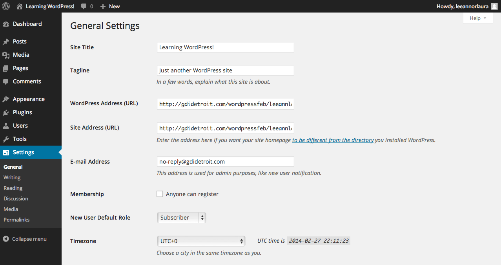
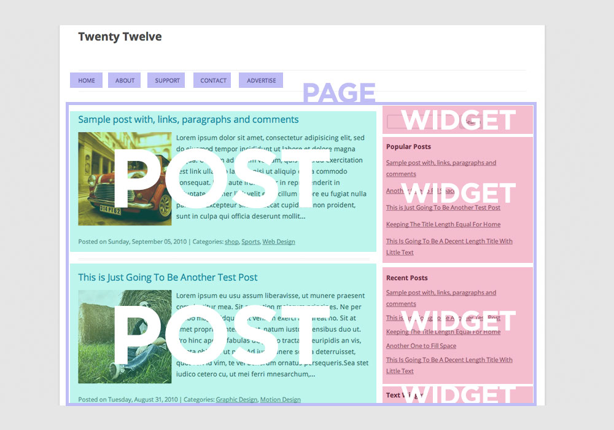

Set up your computer for today
Wifi Network: atomic-detroit-public
Password: atomicpublic
We recommend that you install Google Chrome,
if you haven't already.
Welcome!
Girl Develop It is here to provide affordable and accessible programs to learn software through mentorship and hands-on instruction.
Some "rules"
- We are here for you!
- Every question is important
- Help each other
- Have fun
Meet Your Instructor
Laura Eagin
- Started working as a graphic designer. Print only.
- Got a graphic design job. They asked me to build websites.
- Googled everything I could find about WordPress. Attended WordCamp and started breaking sites then fixing them. Fun!
- Went to work for myself two years later.
- Twitter: @chooLaura
- E-mail: LauraEagin@gmail.com
Meet Your Instructors
Leeann Drees
- Discovered WordPress as a user, blogging for a non-profit -- my initial impression was not good!
- When I decided I wanted to go into web design & development, my mentor strongly encouraged me to take another look at WordPress. I was amazed by the possibilities!
- Today I use WordPress to create websites for small businesses, artists, & entrepreneurs. My clients ♥ it!
- Twitter: @leeanndrees
- E-mail: leeann.drees@gmail.com
Let's meet the class!
Tell us your name
What type of website would you like to build.
What is your favorite candy?
WordPress
Slides
http://gdidetroit.com/wordpress/slides
WordPress
What is WordPress - Nuts & Bolts
WordPress Dashboard Walk Through
Publish our own page
Plugins, Themes, Tips
Look at some WordPress Business sites
Questions
What is WordPress?
- An open source blogging tool and content management system.
- WordPress was created in 2003.
- Powers 20% of the web & 66% of CMS sites.
- Constantly being improved. Free.
Source: W3techs.com
WordPress.com
- WordPress.com is "free*"
- Similar to Blogger, Tumblr, and other blogging services.
- By default your domain name will look like: YourName.WordPress.com
- Customization options are extremely limited.
WordPress.com Add Ons
WordPress.org
- WordPress.org is where you download the free WordPress software.
- To run this software, the files need to be hosted online.
- This means you need to pay for domain registration & web hosting
- domain registration runs about $10-15/year
- web hosting is about $10-15/month
Screenshot: WP.org
Different Features
To Sum Up
We'll focus on wordpress.org in our class today.
Many features are available with both platforms.
If you want to get a feel for wordpress.com after class, you'll find it quick & easy to set up an account — and one of us can walk you through it if you have any questions.
Behind the scenes
Databases are ugly.
WordPress is easy.
Databases are simply a way to store data and retreive it easily. It's just storage.
This is where WordPress comes in. WordPress gives you a nice GUI, a way to interact with your database content.
GUI = Graphical User Interface. Pronounced "gooey"
- A MYSQL database stores your content: text, graphics, media, settings and login information
- PHP pulls just the data you want from the database.
- MySQL + PHP + CSS = Beautiful HTML web pages with your content inserted into them.
Installing WordPress: The Easy Way
- Most web hosting companies offer a simple, "one-click" WordPress installation.
Installing WordPress: Manually
- If your host doesn't offer 1-click installation, you can manually install Wordpress:
- Upload the WP software via FTP.
- Create a MySQL database.
- Edit 4 lines in wp-config.php
The WordPress Dashboard
The WordPress dashboard is the first screen you see when you log in to administration area of your site.
From the dashboard you can access pages, media, site settings, plugins... everything!
Link to my dashboardGeneral Settings
The first thing to take care of is our configuring our settings!
Publishing a post

Let's try it!
Log in to our site Dashboard:
gdidetroit.com/wordpress/wp-adminusername: participant
password: gdidetroit
Let's try it!
Create a new post
Give it your name as the title
Add some text and images to our post
Click to select the category "participant"
Publish it!
Take it up a level!
- Turn some text into a link.
- Style headings : H1, H2, H3
- Italicize and bold some text.
Break Time!
Enjoy some snacks courtesy of Atomic Object!

Let's Review
WordPress.com vs WordPress.org??
If you want to blog for free...
If you want a business site with a memorable URL and e-commerce functionality...
If you want to use a simple GUI to write great content & upload cool photos...
Pages
vs
Posts
vs
Widgets
Pages vs. Posts. vs. Widgets
 Some pages show lists of posts. Typically your Blog page, or sometimes your Home pagePages vs. Posts. vs. Widgets
 Standalone pages do not show a list of posts, but show the page content.
Standalone pages do not show a list of posts, but show the page content.
Widgets
Widgets are one of the few content areas in WordPress that are changed "on the fly" without saving.
We can make multiple menus. A main menu, sidebar menu, footer menu, etc.
Menus
In order to navigate around the site, we set up a Menu.
We can make multiple menus. A main menu, sidebar menu, footer menu, etc.
Plugins
A Plugin is a piece of code that you add on to your site
Plugins help us add advanced features to our sites and manage our site better
Many plugins are free. You can even build your own plugin.
So Many Plugins
Some of our favorites:
Spam Stoppers:
Basic Maintenace & Support:
Fancy Slideshows:
Etc:
Themes
A theme is a set of files that style your site's content.

CSS + a few extra features
Theme Files

So Many Themes
Free themes:
- Default pre-loaded themes
- Wordpress.org/themes
Commercial themes:
- WooThemes
- iThemes
- The Theme Foundry
- StudioPress
- etc...
So Many Themes
Basic things to look for:
- Basic theme structure and content areas
- Is anything broken?
- Is it responsive?
- Did it load slowly?
- Is it well supported?
- What do others say about it?
Let's try it!
We'll search together for a theme we like, using the advanced search options.
wordpress.org/themesFind a theme you like!
We recommend searching on wordpress.org, but the internet is your oyster.
Remember:
- Basic theme structure and content areas
- Is anything broken?
- Is it responsive?
- Did it load slowly?
- Is it well supported?
- What do others say about it?
Changing Themes
Install it.
"Live Preview" it.
Activate it
No Theme is Perfect. Customize!
Two Ways:
Built In Theme Options


Child Themes
Source & more info: codex.wordpress.org/Child_Themes
Child theme is on the left; Parent theme (Canvas by Woothemes) is on the right
From: http://www.woothemes.com/2012/11/case-study-utique/
Another great example from the same parent theme here
How to Create a Child Theme

How do businesses use WordPress?
- Build a site quickly.
- Treat it like a news center. Display "feeds" in one location
- Collaborate - multiple users on one WordPress site
- Collect feedback - internally or through public comments
Examples
Common Questions
about WordPress
Can I move my Blog?
or
Can I import my old Blog?
Should I be concerned about my site's security?
Many WordPress attacks are carried out autonomously by malicious software bots.
What the bad robots do:
- Brute Force Attacks – They try to log in.
- WP Core Vulnerabilities – They know what's wrong with your version of WP.
- Bad Plugins – They inject code into parts of your site.
- They watch your files – Permissions, unsecure FTP.
Where should I host my site?
There are really a lot of good hosts to choose from.
Read reviews: http://www.whoishostingthis.com/compare/wordpress/Some of our favorites are:
Questions?
We're here to help!

lauraeagin@gmail.com Twitter: @choolaura
leeann.drees@gmail.com Twitter: @leeanndrees